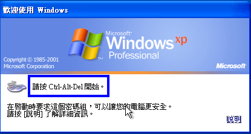
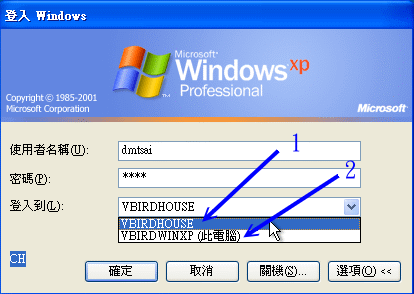

16.4 以 PDC 服务器提供账号管理
我们在 16.1.5 约略谈过 PDC 这个玩意儿，他可以让用户在计算机教室的任何一个地方，都用同一组账号密码登入， 并可取得相同的家目录等数据，这与我们之前谈到的，在 Linux 底下使用 NIS 搭配 NFS 是很类似的作法！ 只是它是用在 Windows 上头就是了。那如何完成呢？我们底下就来谈谈这个玩意儿！^_^
16.4.1 让 Samba 管理网域使用者的一个实作案例
前面介绍的内容都是属于 Peer/Peer 的联机状况，也就是 Samba 服务器与 Windows 客户端其实是平等地位的啦！ 所以 Windows 客户端需要知道 Samba 服务器内的账号密码数据后，才能够顺利的使用 Samba 的资源。 不过，这样的方式在较大型一些的局域网络环境可能就会有点困扰，例如学校的环境。
举例来说，如果你有一个计算机教室里面有 50 部 Windows XP Pro. 的个人计算机，由于计算机教室大家都会使用， 因此里面这 50 部个人计算机有使用还原精灵，也就是每次计算机重新启动后整个操作系统就会还原成原本的样子。 但我们知道使用者总是需要有个人家目录吧？他们总不希望这次的工作在重新启动后就失去了～ 所以我们可以利用一部主机来让他们储存数据啊！那就是 Primary Domain Controller (PDC) 服务器。
其实 Samba PDC 的作用很简单，就是让 Samba PDC 成为整个局域网络的领域管理员 (domain controller)， 然后让 Windows 主机加入这个领域，未来使用者利用 Windows 登入时，(1)Windows 会前往 PDC 服务器取得用户的账号密码， 同时 (2)PDC 还会传送用户的重要数据到那部 Windows 个人计算机上，而 Windows 计算机上的用户注销时， (3)该用户修改过的数据也会回传给 PDC 。如此一来不管这个使用者在哪一部个人计算机上面登入， 他都能够取得正确的个人资料！很棒的作用吧！
PDC 是个很复杂的环境，他可以达到的功能相当的多，而且密码的验证也不必在同一部 PDC 主机上面， 不过这里我们不谈那么复杂的东西，只是做一个简单的练习，因此底下的这部 PDC 使用 Linux 自己的密码来进行验证， 并且也只管理自己所分享出去的资源啰！至于假设网络环境与相关工作组参数如下：
 图 16.4-1、一个简易的 PDC 实作案例相关参数示意图
图 16.4-1、一个简易的 PDC 实作案例相关参数示意图
整个基本的设定流程应该是这样的：
- 区网计算机环境设定：整体网域设定好，尤其 Windows 的工作组与计算机名称及 IP 等参数；
- PDC 设定：因为 PDC 管理自己的密码，所以 security = user；
- PDC 最好拥有整个网域的名称解析权力，亦即成为主要的名称解析器；
- 需有 netlogon 资源共享，提供 windows 2000/XP pro. 客户端的登入之用；
- 由于 Windows 需读入个人配置文件，默认目录为 profile，Linux 系统需预先设定此目录；
- 增加 PDC 上的使用者账号以及机器代码 (machine account) 等等
- 在 Windows 2000/XP pro. 个人计算机上设定成为 PDC 的客户端。
底下咱们就来依序处理处理先！
16.4.2 PDC 服务器的建置
PDC 服务器的建立非常的麻烦，需要一步一步的实作进行，挺讨厌的。而且，由于建置 PDC 的环境主要在管理整个区网内的 Windows 计算机，因此每部 Windows 计算机的主机名与相关参数要先确定下来，如同上一小节的图示内， 每部计算机的角色定位都需要清楚才行。清楚了各个计算机的角色后，接下来就能够慢慢的实作进行啰！
- 1. 建置 NetBIOS 与 IP 对应的数据：设定 lmhosts 与 /etc/hosts
由于我们的 Samba 即将成为整个网域的名称解析者，因此你最好将整个网域的 NetBIOS name 与 IP 的对应写入 lmhosts 档案当中。如果你的区网是以 DHCP 发放 IP 的，那么你最好搭配 DNS 系统去建置你的主机名对应信息， 否则主机名对应不起来，总是有点困扰。在这个案例中，由于鸟哥使用的 NetBIOS name (如 vbirdserver) 与主机名 (如 www.centos.vbird) 并不相同，因此这里建议需要修改 lmhosts 才好。
[root@www ~]# vim /etc/samba/lmhosts
127.0.0.1 localhost <==这行是预设存在的，不要动他，底下的请自行新增
192.168.100.254 vbirdserver
192.168.100.10 vbirdlinux
192.168.100.20 vbirdwinxp
192.168.100.30 vbirdwin7
[root@www ~]# vim /etc/hosts
192.168.100.254 www.centos.vbird vbirdserver
192.168.100.10 clientlinux.centos.vbird vbirdlinux
192.168.100.20 vbirdwinxp
192.168.100.30 vbirdwin7
由于 Linux 上的 Samba 很多数据还是与 TCP/IP 的主机名有关，所以除了 lmhosts 之外，建议还是处理一下 /etc/hosts 比较妥当！这样就行啦！
- 2. 建置 PDC 主设定：处理 smb.conf
假设我们要让 PDC 客户端登入时可以取得他自己的家目录，那么需要这样处理：
[root@www ~]# vim /etc/samba/smb.conf
[global]
workgroup = vbirdhouse <==请务必确认一下工作组与主机名
netbios name = vbirdserver
server string = This is vbird's samba server
unix charset = utf8
display charset = utf8
dos charset = cp950
log file = /var/log/samba/log.%m
max log size = 50
security = user
passdb backend = tdbsam
load printers = yes
cups options = raw
printcap name = cups
printing = cups
# 与 PDC 有关的一些设定值：
# 底下几个设定值处理成为本局域网络内的主要名称解析器
preferred master = yes
domain master = yes
local master = yes
wins support = yes
# 操作系统 (OS) 等级越高才能成为主网域的控制者，一般 NT 为 32,
# Windows 2000 为 64 ，所以这里我们设定高一点，但不可超过 255
os level = 100
# 底下则是设定能否利用 PDC 登入，且登入需要进行哪些动作：
domain logons = yes
logon drive = K: <==登入后家目录挂载成 Windows 哪一槽
logon script = startup.bat <==每个使用者登入后会自动执行的程序
time server = yes <==自动调整 Windows 时间与 Samba 同步
admin users = root <==预设的管理员账号！预设为 root
logon path = \\%N\%U\profile <==使用者的个人化设定
logon home = \\%N\%U <==用户的家目录位置！
# 这个在指定登入者能够进行的工作，里面主要是具有许多执行程序：
[netlogon] <==与前面的 logon script 有关，该程序放置在这里
comment = Network Logon Service
path = /winhome/netlogon <==重要的目录，要自己建立才行！
writable = no
write list = root
follow symlinks = yes
guest ok = yes
[homes]
....(底下保留原本设定)....
[root@www ~]# testparm
[root@www ~]# /etc/init.d/smb restart
[root@www ~]# /etc/init.d/nmb restart
上面的设定有几个地方比较有趣一点：
- time server：要使 Samba 与 Windows 主机的时间同步，使用这个项目；
- logon script：当使用者以 Windows 客户端登入后，Samba 可以提供一支批处理文件，让使用者去设定好他们自己的目录配置。整个配置的内容记录在 startup.bat 当中。 你要注意的是，这个 startup.bat 档名可以随意更改，不过他必须要放置到 [netlogon] 所指定的目录内；
- logon drive：那么这个家目录要挂载到那个分割槽？ 在 Windows 底下大多以 C, D, E... 做为磁盘的代号，你这里可以指定一下家目录要放置成为那个磁盘代号；
- admin users：指定这个 Samba PDC 的管理员身份。
- [netlogon]：指定利用网络登录时首先去查询的目录资源。
- logon path：用户登入后，会取得的环境设定数据在哪？ 我们知道用户会有一堆环境数据，例如桌面等，这些东西都放置到这里来。使用的变量中， %N 代表 PDC 服务器的位置， %U 则代表用户的 Linux 家目录。因此最终你得要有 ~someone/profile 的目录才可以。
logon home：用户的家目录，默认与 Linux 的家目录相同位置。
3. 建立 Windows 客户端登入时所需的设定数据 netlogon 目录
先来建立 [netlogon] 内所需要的数据好了，那就是一个目录。由于鸟哥预计将所有的 PDC 数据通通放置到 /winhome 当中，包括用户家目录，因此很多东西都需要修订喔！包括后来的 SELinux 肯定会出问题的～
[root@www ~]# mkdir -p /winhome/netlogon
接下来我们还得要建立允许使用者执行的档案，就是那个 startup.bat 才行！ 注意一下，我们这里假设用户家目录为 K 槽，那你可以这样做：
[root@www ~]# vim /winhome/netlogon/startup.bat
net time \\vbirdserver /set /yes
net use K: /home
# 这个档案的格式为：net use [device:] [directory]
# 再将该档案转成 DOS 的断行格式才行！因为是提供给 Windows 系统嘛！
[root@www ~]# yum install unix2dos
[root@www ~]# unix2dos /winhome/netlogon/startup.bat
[root@www ~]# cat -A /winhome/netlogon/startup.bat
net time \\vbirdserver /set /yes^M$
net use K: /home^M$
# 瞧见吗？会多出个奇怪的 ^M 符号，那就是 Windows 断行字符。
- 4. 建立 Windows 专用的使用者
因为鸟哥预计将使用者全部挪到 /winhome 底下，而且每个用户家目录应该还要有 profile 目录存在才行， 为了避免麻烦，所以我们先到 /etc/skel 去处理一下，然后才建立账号，最后才产生 samba 用户吧！ 产生 samba 用户可以使用 pdbedit 也能够直接使用 smbpasswd -a ，因为没有要用特殊的参数， 所以，Samba 用户就用旧的 smbpasswd 来处理即可。
[root@www ~]# mkdir /etc/skel/profile
[root@www ~]# useradd -d /winhome/dmtsai dmtsai
[root@www ~]# useradd -d /winhome/nikky nikky
[root@www ~]# smbpasswd -a root
[root@www ~]# smbpasswd -a dmtsai
[root@www ~]# smbpasswd -a nikky
[root@www ~]# pdbedit -L
smb1:2004:
smb3:2006:
smb2:2005:
student:505:
root:0:root
dmtsai:2007:
nikky:2008:
# 重点是需要有画底线的那几个人物出现才行呦！
[root@www ~]# ll /winhome
drwx------. 5 dmtsai dmtsai 4096 Jul 29 16:49 dmtsai
drwxr-xr-x. 2 root root 4096 Jul 29 16:48 netlogon
drwx------. 5 nikky nikky 4096 Jul 29 16:49 nikky
# 用户的家目录不是在 /home 而是在 /winhome 里头才是对的呦！
那以后新增的使用者都有可以存放来自 Windows 的特殊配置文件目录喔！比较好管理啰～ 当然啦，使用 useradd 新增使用者后，记得也要使用 smbpasswd -a username 来让该使用者可以使用 Samba 喔！
- 5. 建立机器码账号
由于 PDC 会针对 Windows 客户端的主机名 (NetBIOS name) 进行主机账号检查， 所以我们也要为客户端的主机名进行账号的设定。咦！啥是主机账号？ 一般用户账号是英文或数字，主机账号则在该账号最后面加上一个钱字号『$』即可！ 举例来说， vbirdwinxp 这部主机可设定的账号名称为 vbirdwinxp$。
而我们知道要使用 smbpasswd 增加的使用者必须要在 /etc/passwd 当中，因此要建立这个账号你就得要这样做：
[root@www ~]# useradd -M -s /sbin/nologin -d /dev/null vbirdwinxp$
[root@www ~]# useradd -M -s /sbin/nologin -d /dev/null vbirdwin7$
会增加 -M -s -d 等参数的原因是因为不想要让这个账号具有可以登入的权限， 因此将这个主机账号设定的比较怪一点～ ^_^～接下来让 Samba 知道这个账号是主机账号，所以你应该要这样做：
[root@www ~]# smbpasswd -a -m vbirdwinxp$
[root@www ~]# smbpasswd -a -m vbirdwin7$
这样便加入主机账号啰！而我们的 Samba PDC 也就可以透过『主机账号』来判断 Windows 客户端能否连上来， 若连接上 PDC 与 Windows 客户端后，接下来一般使用者账号就可以在 windows 客户端登入了！
- 6. 修改安全性相关数据
由于我们建立的账号目录在 /winhome 底下，并非正规的 CentOS 目录，所以最重要的 SELinux 可能会跑掉～ 所以，我们还得要修订 SELinux 才行！方法很简单，将 SELinux type 转为 samba_share_t 即可！
[root@www ~]# chcon -R -t samba_share_t /winhome
由于 SELinux 的数据是会继承上层目录的，因此未来新增的用户，理论上，就不需要重新修订 SELinux 的文件类型了。 但是，如果你老是发现登入 PDC 的账号却无法取得家目录，那么就观察 /var/log/messages 内的资料来修订吧！
16.4.3 Wimdows XP pro. 的客户端
请注意，底下的方法仅适用于 Windows 2000, Windows XP 专业版 (Pro.)，一般的 Windows XP home 版本是不支持的！ 如果你客户端的主机是随机版的 Windows XP ，通常是 Windows XP home ，那底下的方法可能就无法适用啰！ 要连接上 Samba PDC 的过程也是挺简单的，你可以这样做： (至于 Windows 7 对于 Samba 的版本要求较高，官方网站是说得高于 3.3.x 以上版本才有支持)
- 1. 确认 windows 客户端的网域与主机名
首先我们必须要确认 Windows 客户端的工作组与主机名跟咱们的 Samba PDC 相同， 确认的方式在局域网络里面已经提过了，这里在强调一次。将鼠标移动到『我的计算机』上面，按下右键， 选择『内容』，然后点选『计算机名称』，会出现如下图示：
 图 16.4-2、Windows 客户端连上 PDC 的方式流程示意图
图 16.4-2、Windows 客户端连上 PDC 的方式流程示意图
如上图所示，你要先确认箭头 1 处指的主机名与工作组，在我们这个案例当中的工作组为 vbirdhouse， 这部 Windows 主机的 NetBIOS 名称则为 vbirdwinxp 喔！如果不对的话，请按下『变更』来设定， 并且重新启动。重新启动完毕后再到上图的画面当中，按下箭头 2 所指的网络识别处。
- 2. 设定主机名与域名
接下来我们要设定这部 Windows XP pro. 要链接到局域网络上的哪部 PDC 上面，亦即是处理主机账号以及 Samba PDC 负责的网域 (domain) 啦！在图 16.4-2 按下『网络识别』后，分别在出现的窗口当中选择：
- 下一步；
- 这台计算机是公司网络的一部份，而且我在工作时用来联机到其他计算机(T)
- 我的公司使用一或多个网域的网络(C)
- 下一步
然后就会出现如下的窗口：
 图 16.4-3、Windows 客户端连上 PDC 的方式流程示意图
图 16.4-3、Windows 客户端连上 PDC 的方式流程示意图
请依序填写 Samba 主机上面的管理员账号与密码，要注意这个密码是记录于 Samba 中的那个，可不是 /etc/shadow 喔！别搞混了～这是 Samba 服务器的设定呢。输入之后按下一步吧，通常都会出现找不到正确主机的画面，如下所示：
 图 16.4-4、Windows 客户端连上 PDC 的方式流程示意图
图 16.4-4、Windows 客户端连上 PDC 的方式流程示意图
鸟哥也觉得很奇怪，老是告诉我找不到！不过没有关系，这里我们依旧再填一次主机的 NetBIOS name 以及组名， 如上图所示，然后继续按下一步，就会出现如下的画面啦：
 图 16.4-5、Windows 客户端连上 PDC 的方式流程示意图
图 16.4-5、Windows 客户端连上 PDC 的方式流程示意图
这次就给他输入正确的管理员账号与密码，记得最后面的网域就是工作组名称，别写错了。 处理完毕后给他按下确定吧！然后就会出现如下画面：
图 16.4-6、Windows 客户端连上 PDC 的方式流程示意图
恭喜你，这就表示已经连接上 Samba PDC 啰！我们希望所有的使用者都直接由 Samba PDC 控管，所以这里请填写 『此时不新增使用者』吧！按下一步去。
- 3. 重新启动并以新的域名登入
在图 16.4-6 之后请重新启动，开机后整个画面会有点类似这样：
 图 16.4-7、Windows 客户端连上 PDC 的方式流程示意图
为了保护我们的系统，因此得要按下 [ctrl]+[alt]+[del] 三个组合按键后，才会出现如下的登入画面：
 图 16.4-8、Windows 客户端连上 PDC 的方式流程示意图
目前系统上面就会有两个可选择的账号管理模式，一个是本机账号一个是 PDC 提供的账号，那我怎知登入者是哪个管理模式？ 所以你就得要按下上述画面的『选项』，才会出现『登入到』的那一行数据。出现的两个数据分别是：
- VBIRDWINXP(此计算机)：这就是你的计算机名称，亦即是以本机账号登入；
- VBIRDHOUSE：就是 PDC 的 workgroup 项目，透过 PDC 的账号来尝试登入。
现在请输入你在 Samba PDC 上面拥有的账号与密码来尝试登入吧！那如果你输入的账号密码是对的，却发现如下的画面时， 肯定是某些档案权限或者是 SELinux 设定错误！请参考 /var/log/messages 或 /var/log/samba/* 里面的登录档来修改！
 图 16.4-9、使用 PDC 账号登入却发现权限错误的图示
图 16.4-9、使用 PDC 账号登入却发现权限错误的图示
- 4. 观察用户的家目录与配置文件
如果你可以顺利登入的话，打开档案总管后应该可以看到类似下方的画面：
 图 16.4-10、登入 PDC 后，取得的家目录状态
图 16.4-10、登入 PDC 后，取得的家目录状态
呵呵！该连上的通通连结上来啰！你也可以在自己的家目录 (K 槽) 新增移除数据的！是否很不错啊！ ^_^！ 而当你注销之后，你在 Windows 桌面上头所进行的各项个人化设定通通会被移动到 /winhome/dmtsai/profile 当中喔！ 如果不相信的话，请自行前往 Samba 服务器上头瞧一瞧就知道了。
16.4.4 Wimdows 7 的客户端
根据 SAMBA 官网的说明，支持 Windows 7 的 Samba 版本必须要高于 3.3.x 才行，还好，我们的 CentOS 6.x Samba 版本真的是高于 3.3.x 的 3.5.x，因此理论上是支持 Windows 7 的！只不过 Windows 7 要加入 Samba PDC 还得要修改注册码才行！这部份真的是给它很困扰！在 Windows 7 机码的修改方面，主要是修改底下的机码：
# 1\. 这个部分是进行『新增』机码！
[HKEY_LOCAL_MACHINE\SYSTEM\CurrentControlSet\services\LanmanWorkstation\Parameters]
“DomainCompatibilityMode”=dword:00000001
“DNSNameResolutionRequired”=dword:00000000
修改的方式为，在 Windows7 的执行里面输入『 regedit 』，会出现如下的画面：
 图 16.4-11、Windows 7 注册机码的动作
图 16.4-11、Windows 7 注册机码的动作
先由 (1)左侧窗口一层一层点选到我们所需要的目标去，然后 (2)观察最底下的机码顺序看对不对。之后 (3)在右侧窗口点选我们所需要的机码，如果是要新增，那就是在右侧空白处右键单击选新增即可增加一组机码名称。最后 (4)双击机码会出现可供修改的窗口，那就改成上面表格中的要求即可。更多关于 Windows 7 加入 PDC 的相关资料， 请查阅文末的参考数据部分喔。
等到将机码修订完毕，你就可以使用与 Windows XP 相同的方式来加入 PDC 啰！
16.4.5 PDC 之问题克服
如果老是发生错误讯息为『使用的帐户是计算机帐户。请使用你的通用用户帐户或本机用户帐户来存取这台服务器』时， 你可以这样做的：
先察看一下 /var/log/samba 里面的登录文件信息，尤其是 log.vbirdwinxp 关于这部主机的信息吶；
如果还是无法解决，可以在 lmhosts 里面增加 vbirdwinxp 的 IP 与主机名的对应，然后将 samba 整个关掉『/etc/init.d/smb stop』，等待一段时间让 NetBIOS 的名称解析时间逾时，再重新启动 samba 『/etc/init.d/smb start』，然后再重新做一次输入 root 的密码那个动作
在鸟哥尝试过的案例中，上面第二个步骤挺有效的！不过，还是得要察看 /var/log/samba 里面的登录信息才行喔！
- 一些 Windows 账号在 Windows 系统上面的使用技巧
虽然 PDC 很好用，不过你要注意的是，每次你使用 PDC 上头的账号登入 Windows 客户端主机时， Windows 主机会由 /winhome/username/profile/ 当中加载所需要的数据， 并暂时启动一个文件夹在 Windows 系统的 C:\Documents and Settings\username 当中，如果你的家目录下的 profile 数据太多时， 光是传输就会花去很多时间的！
所以，你应该将一些档案数据放置到你的家目录下，亦即 K 槽当中，尽量不要使用 Windows 预设的『我的文档夹』， 因为『我的文档夹』会将数据移动到『 /winhome/username/profile/My Documents/ 』目录下，同样的， 储存到桌面的数据会被放置到『 /winhome/username/profile/桌面/ 』目录中，那样在登入与注销时会花去很多时间喔！ 这个小地方也要注意的呢！ ^_^
好了，关于 SAMBA 的 PDC 作法我们就谈到这里，还有更多的信息你可以前往这个章节最后面的参考数据所列出的网址去查阅， 因为还有很多的作法吶！事实上，鸟哥觉得在一个网域当中，如果有多部的 Windows NT 主机，例如 Windows 2000/XP pro. 这一类的比较稳定的个人使用桌面版本时，使用 PDC 就很有用了！因为 Windows 2000/XP pro. 也是一个多人的操作系统，不像 Windows 98 是单人的操作系统。所以，当使用 Windows 2000/XP pro. 而无法登入 PDC 时，你是无法使用 Windows 2000/XP pro. 上面的任何的信息的。 但是在 Windows 98 上面若无法正确的登入，你仍然具有该计算机的主控权喔！
另外，设定 Windows 客户端之前，请先确认你的 Windows 是什么版本？ 上述的动作对于 Windows XP 家用版 (Home), Windows 7 是没有作用的！请先确认才行喔！